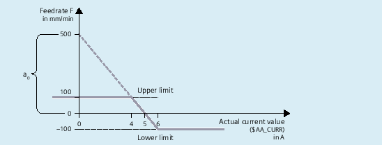
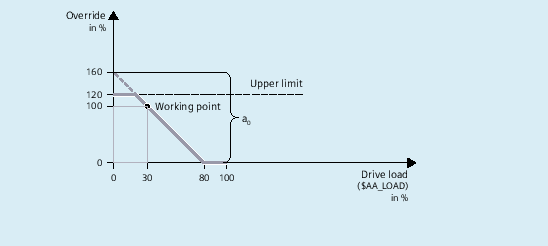

A variable that is evaluated via a polynomial can be read with the SYNFCT function in the main run and the result can be written to another variable. Application examples:
Feedrate as a function of drive load
Position as a function of a sensor signal
Laser power as a function of path velocity
SYNFCT(<Poly_No>,<SysVar_Out>,<SysVar_In>)
Parameter | Meaning |
|---|---|
| Number of the polynomial defined with |
| System variable, output: |
| System variable, input: |
For information on | |
An override value is added to the programmed feedrate (F word):
Factive = Fprogrammed + FAC
| Meaning |
|---|---|
$AC_VC | additive path feedrate override |
$AA_VC[axis] | additive axial feedrate override |
Input value is the actual current value $AA_CURR of the X axis.
The operating point is set to 5 A.
The feedrate may be altered by ±100 mm/min and the axial current deviation may be ±1 A.
Example: Additive control of path feed
Determining the parameters of the FCTDEF function:
| |
| = 1 (example) |
| = -100 |
| = 100 |
Polynomial: f(x) = a0 + a1x +a2x2 + a3x3 | |
a0: | 1 / 100 = 5 / a0 ⇒ a0 = 500 |
a1 | = 100 mm/min / -1 A = -100 [mm/min / A] |
a2 | = 0 (not a square component) |
a3 | = 0 (not a cubic component) |
Calculation of the override value:
| |
| = 1 |
| $AC_VC |
| $AA_CURR (drive actual current value) |
Programming:
| Program code | |
|---|---|
| N100 FCTDEF(1, -100, 100, 500, -100) | |
| N110 ID=1 DO SYNFCT(1, $AC_VC[X], $AA_CURR[X]) |
The programmed feedrate is multiplied by a percentage factor (additional override):
Factive = Fprogrammed * FactorAC
| Meaning |
|---|---|
$AC_OVR | Path override can be specified via synchronous action |
Input value is the percentage drive load $AA_LOAD of the X axis.
The operating point is set to 100% at 30% drive load.
The axis must stop at 80% load.
An excessive velocity corresponding to the programmed value +20% is permissible.
Example: Multiplicative control
Determining the parameters of the FCTDEF function:
| |
| = 2 (example) |
| = 0 |
| = 120 |
Polynomial: f(x) = a0 + a1x +a2x2 + a3x3 | |
a0: | 50 / 100 = 80 / a0 ⇒ a0 = 160 |
a1 | = 100% / -50% = -2 |
a2 | = 0 (not a square component) |
a3 | = 0 (not a cubic component) |
Calculation of the override value:
| |
| = 2 |
| $AC_OVR |
| $AA_LOAD (drive load) |
Programming:
| Program code | |
|---|---|
| N100 FCTDEF(2, 0, 120, 160, -2) | |
| N110 ID=1 DO SYNFCT(2, $AC_OVR[X], $AA_LOAD[X]) |
Clearance control: Principle
The clearance control of the infeed axis Z is performed via the FCTDEF and SYNFCT functions as well as by the system variables $AA_OFF and $A_INA.
Constraints:
The analog voltage of the clearance sensor is connected via the analog input $A_INA[3].
The position deviations are summated in $AA_OFF (integrated):
MD36750 $MA_AA_OFF_MODE, bit 0 = 1
If the upper limit of the Z axis is exceeded by 1 mm, the X axis is stopped:
SD43350 $SA_AA_OFF_LIMIT[Z] = 1
See also Chapter "Overlaid movements ($AA_OFF)".
| Note |
$AA_OFF is effective in the basic coordinate system (BCS)The offset is effective before the kinematic transformation in the basic coordinate system (BCS). The example therefore cannot be used for a clearance control in the orientation direction of the tool (workpiece coordinate system WCS). For clearance control system with high dynamic response or 3D clearance control, see: More information Function Manual Technologies User-specific responsesWhen the limit value SD43350 $SA_AA_OFF_LIMIT is reached, customized responses can be triggered, for example:
|
Clearance control
Determining the parameters of the FCTDEF function:
| |
| = 1 (example) |
| = 0.2 |
| = 0.5 |
Polynomial: f(x) = a0 + a1x +a2x2 + a3x3 | |
a0: | 10 / x = 20 / 0.3 ⇒ a0 = x + 0.2 = 0.15 + 0.2 = 0.35 |
a1 | = 0.15 mm / 10 V = 1.5 * 10-2 mm/V |
a2 | = 0 (not a square component) |
a3 | = 0 (not a cubic component) |
Calculation of the override value:
| |
| = 1 |
| $AA_OFF |
| $A_INA (analog input) |
Programming:
| Program code: %_N_AON_SPF | Comment |
|---|---|
| PROC AON | ; Clearance control "ON" |
| FCTDEF(1, 0.2, 0.5, 0.35, 1.5 EX-2) | ; Polynomial definition |
| ID=1 DO SYNFCT(1,$AA_OFF[Z],$A_INA[3]) | ; Clearance control |
| ID=2 WHENEVER $AA_OFF_LIMIT[Z]<>0 DO $AA_OVR[X] = 0 | ; Limit value test |
| RET | |
| ENDPROC | |
| Program code: %_N_AOFF_SPF | Comment |
|---|---|
| PROC AOFF | ; Clearance control "OFF" |
| CANCEL(1) | ; Delete clearance control |
| CANCEL(2) | ; Delete limit value check |
| RET | |
| ENDPROC | |
| Program code: %_N_MAIN_MPF | Comment |
|---|---|
| N100 $SA_AA_OFF_LIMIT[Z]=1 | |
| N110 AON | ; Clearance control "ON" |
| ... | |
| N200 G1 X100 F1000 | |
| N210 AOFF | ; Clearance control "OFF" |
| M30 | |
See also:
Online tool offset (FTOC)